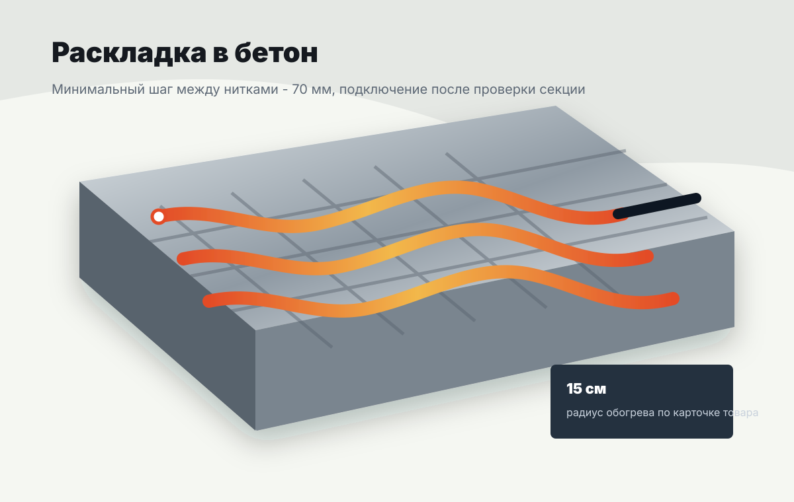

Не включать в бухте
Нагревательную секцию нельзя включать неразмотанной, даже для короткой проверки.
Применение / КДБС-40
Технические ориентиры для закупки и подготовки объекта: мощность, питание, шаг укладки, температура монтажа и ограничения.
Параметры
КДБС применяется только в бетоне. Перед подключением проверяют марку секции, сопротивление, целостность кабеля и соответствие проектной схеме.

Порядок подготовки
Нагревательную секцию нельзя включать неразмотанной, даже для короткой проверки.
КДБС предназначен для прокладки в бетон и не используется как открытый греющий кабель.
При фиксации к арматуре нельзя пережимать, резать или резко перегибать нагревательную часть.
Ориентир из паспортных данных для планирования работ на объекте.
Для однократного изгиба при монтаже без повреждения секции.
Значение используется как предельный технический ориентир.